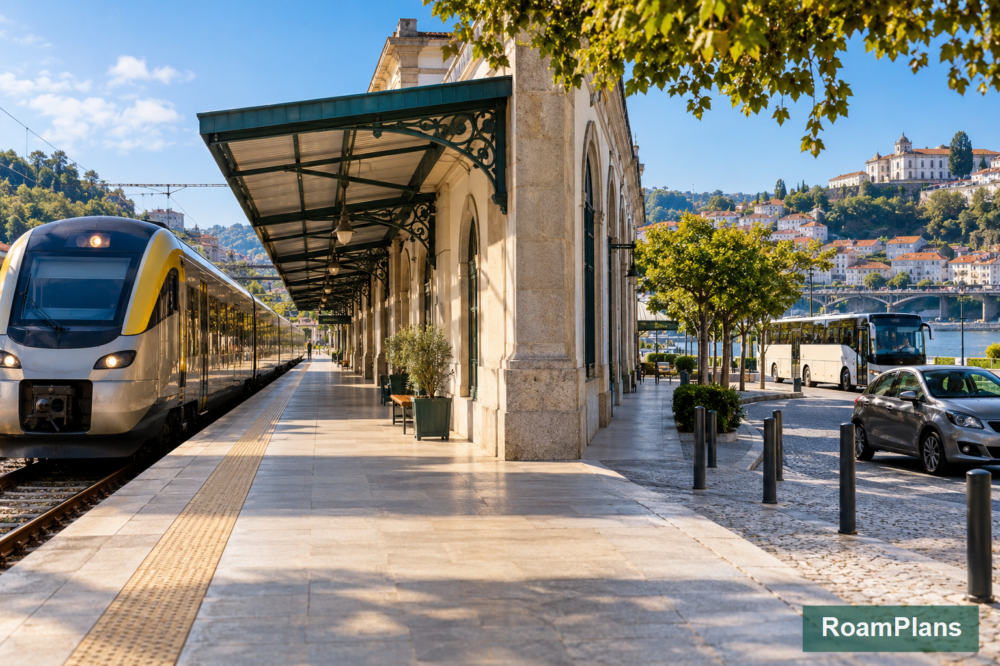

How to Get Around Portugal: Trains, Buses, Cars and Flights
Getting around Portugal is easier once you stop looking for one transport option that works everywhere. Trains are excellent between several major cities, buses reach many places the rail network does not serve directly, and a rental car becomes useful when your plans move away from major transport corridors. Flights have a much smaller role on mainland trips but become far more useful for Madeira and the Azores.
When I compare Portugal transport options for RoamPlans, I start with the route rather than choosing a car or rail pass first. A first-time visitor traveling between Lisbon, Coimbra, Porto, Sintra, and parts of the Algarve may need no car at all. Another traveler staying in rural Alentejo or moving between remote beaches may benefit from one for only part of the trip. The best Portugal transportation plan is often a mix of trains, buses, local transit, and a short car rental where it adds real value.
Best Ways to Get Around Portugal at a Glance

| Transport | Best For | Main Limitation |
|---|---|---|
| Train | Lisbon, Porto, Coimbra, Faro, Sintra, Douro routes | Does not reach every town or beach |
| Long-distance bus | Cities and towns with weak or indirect rail connections | Road traffic can affect timing |
| Rental car | Rural areas, small towns, remote beaches, flexible regional trips | Parking, tolls and city driving |
| Domestic flight | Madeira, Azores and a few longer connections | Airport time makes short mainland routes less useful |
| Metro / urban transit | Lisbon and Porto city travel | Limited outside their urban networks |
| Taxi / ride service | Airport transfers and short gaps | Expensive for repeated long-distance use |
For many first-time trips, the best combination is:
Train between major cities + public transport inside cities + a rental car only for the region where you need it.
Can You Travel Around Portugal Without a Car?
Yes.
A car is not required for many classic first-time Portugal routes.
You can build a trip around:
Porto → Coimbra → Lisbon → Sintra → Algarve
using trains, buses, and local public transport.
You can also reach the Douro Valley by rail or organized transport.
Going car-free works especially well if your trip focuses on:
- ✓Lisbon
- ✓Porto
- ✓Coimbra
- ✓Sintra
- ✓Faro
- ✓Lagos
- ✓Évora
- ✓Douro Valley towns served by rail
- ✓Major city centers
The decision changes when you want to reach small villages, remote beaches, countryside accommodation, or several places in one rural day.
Do You Need One Transport Type for the Whole Trip?
No.
This is one of the easiest ways to make Portugal transportation simpler.
You do not have to decide between:
train trip
or
road trip
for the entire vacation.
A better setup may look like:
Porto → Lisbon by train
Lisbon → Sintra by train
Lisbon → Algarve by train or bus
Rent a car in the Algarve for two days
Return the car before leaving
This gives you the advantages of driving without paying for a vehicle while it sits parked in Lisbon or Porto.
How Portugal's Transport System Fits Together?
Portugal has several transport layers.
National Rail
Comboios de Portugal, usually called CP, operates the national passenger rail network.
Its services include:
- ✓Alfa Pendular
- ✓Intercidades
- ✓Regional and InterRegional trains
- ✓Urban trains
These services cover different types of routes.
Long-Distance Coaches
National coach companies connect large cities, regional centers, and many smaller destinations.
They are useful when:
- ✓There is no direct train
- ✓The bus route is simpler
- ✓Your destination has no passenger rail station
City Public Transport
Lisbon and Porto have strong urban transport networks.
Depending on the city, these can include:
- ✓Metro
- ✓Bus
- ✓Tram
- ✓Urban rail
- ✓Funiculars
- ✓Ferries
You normally do not need a rental car for normal sightseeing inside either city.
Rental Cars
Cars become more useful outside the main city and rail network.
They work especially well for trips involving several small places in one region.
Domestic Flights
Flights connect mainland Portugal with its island regions and also operate on selected mainland routes.
For most normal Lisbon–Porto travel, ground transport is usually more practical once airport transfers and check-in time are considered.
Getting Around Portugal by Train
For many first-time visitors, trains are the easiest long-distance option.
Portugal's rail system connects several destinations that commonly appear in first-trip itineraries.
Useful rail corridors include:
- ✓Lisbon ↔ Porto
- ✓Lisbon ↔ Coimbra
- ✓Porto ↔ Coimbra
- ✓Lisbon ↔ Faro
- ✓Lisbon ↔ Sintra
- ✓Porto ↔ Douro Valley
- ✓Lisbon ↔ Évora
Rail also connects with regional services in other parts of the country.
The Four Train Types Travelers Should Know
You do not need to memorize the entire rail system.
For tourism planning, these four service types explain most trips.
Alfa Pendular
Alfa Pendular, often shown as AP, is Portugal's fastest regular passenger train.
It serves major north–south routes.
It is useful for cities such as:
- ✓Porto
- ✓Coimbra
- ✓Lisbon
- ✓Faro
Choose it when speed and a direct major-city connection matter.
It is usually the premium option compared with slower rail services.
Intercidades
Intercidades, often shown as IC, connects many major Portuguese cities.
It can be a strong alternative to Alfa Pendular.
For many routes, the choice between AP and IC comes down to:
- ✓Departure time
- ✓Arrival time
- ✓Fare
- ✓Your preferred station
- ✓Available service
You do not need to automatically choose the fastest train.
A slightly slower train at a better time may fit your itinerary more easily.
Regional and InterRegional Trains
Regional services cover shorter and less express-oriented routes.
They become useful for areas beyond the main high-speed corridor.
These trains also connect with parts of:
- ✓Douro
- ✓Algarve
- ✓Alentejo
- ✓Central Portugal
- ✓Northern Portugal
Travel can take longer, but regional rail often provides access that the main express trains do not.
Urban Trains
Urban rail networks serve areas around major cities.
For visitors, two useful examples are:
Lisbon → Sintra
and local rail around the Lisbon and Porto metropolitan areas.
These are different from long-distance Alfa Pendular or Intercidades services.
When Is the Train the Best Choice?
Train travel makes the most sense when:
- ✓Both destinations have useful rail stations
- ✓You are moving between major cities
- ✓You do not need a car after arrival
- ✓The route is direct or has an easy connection
- ✓You want to avoid driving and parking
For example:
Lisbon to Porto
Train is one of the strongest choices.
Both cities are major rail hubs, and you arrive without needing to deal with motorway driving or city parking.
Porto to Coimbra
Rail also fits naturally because Coimbra lies on the main corridor south from Porto.
Coimbra to Lisbon
This is another straightforward city-to-city rail section.
Lisbon to Sintra
Urban rail makes Sintra an easy day trip without renting a car.
Lisbon to Faro
Long-distance rail gives travelers another way to reach the Algarve without driving.
Where Trains Become Less Convenient?
Portugal's rail network does not reach every place a visitor may want to see.
Rail becomes less useful when your plans involve:
- ✓Remote Algarve beaches
- ✓Sagres
- ✓Small rural villages
- ✓Countryside hotels
- ✓Multiple wineries in one day
- ✓Some inland areas
- ✓Several small towns spread across one region
This does not mean you need a car for the entire vacation.
It may mean adding a bus, taxi, tour, or short rental-car period for one part of the route.
Portugal Train Travel with Luggage
Train travel becomes much easier when your luggage is manageable.
You may need to:
- ✓Lift bags onto the train
- ✓Move through stations
- ✓Use stairs or escalators
- ✓Store luggage in designated areas or racks
- ✓Carry bags between the station and hotel
One medium suitcase is easier to manage than several loose bags.
This matters even more on a trip with multiple cities.
Should You Buy Train Tickets in Advance?
For long-distance Alfa Pendular and Intercidades services, planning ahead can make sense.
These trains use reserved seating.
Popular travel periods and useful departure times can become busier.
Regional and urban travel works differently.
The dedicated Portugal Train Travel Guide: Routes, Tickets and Booking Tips will cover booking windows, ticket types, stations, seat reservations, and route details without duplicating them here.
Getting Around Portugal by Bus
Buses fill many gaps left by the rail network.
Long-distance coaches connect a wide range of Portuguese destinations, including places with no useful direct train service.
Major intercity operators include networks such as Rede Expressos, along with other coach companies serving domestic routes.
For some trips, the bus can be easier than the train even when both exist.
When Is a Bus Better Than a Train?
Consider the bus when:
- ✓There is no direct rail route
- ✓The bus reaches the town center more conveniently
- ✓Rail requires an awkward connection
- ✓The bus schedule works better
- ✓Your destination has no passenger train station
This is why you should compare the actual route instead of assuming trains are always better.
Good Uses for Long-Distance Buses
Coaches can be useful for:
- ✓Lisbon to smaller regional towns
- ✓Connections across inland Portugal
- ✓Reaching parts of the Algarve
- ✓Towns not directly served by rail
- ✓Routes where train connections require a detour
Portugal's national coach network reaches many destinations spread across the country.
Train vs Bus in Portugal
| Situation | Better Starting Choice |
|---|---|
| Lisbon ↔ Porto | Train |
| Porto ↔ Coimbra | Train |
| Lisbon ↔ Sintra | Train |
| Porto ↔ Douro rail towns | Train |
| Destination has no station | Bus |
| Rail requires several connections | Check bus |
| Small inland town | Bus or car |
| Remote beach | Car or local bus |
| Major city-to-city route | Compare train and bus |
| Flexible rural day | Car |
This is not a strict rule.
Schedules can change the answer for your exact travel date.
Are Portugal Buses Comfortable for Long Trips?
Long-distance coaches are built for intercity travel rather than normal city commuting.
The exact vehicle and facilities depend on the operator and route.
For a longer bus trip, check:
- ✓Departure station
- ✓Arrival station
- ✓Luggage rules
- ✓Stops
- ✓Total travel time
- ✓Whether the service is direct
The direct route often matters more than the difference between train and bus itself.
Train or Bus for the Algarve?
Both can work.
Rail serves the Algarve corridor, but your final destination may still require a regional connection.
A coach may offer a more direct option to some towns.
For example, a traveler staying in Lagos should compare the complete trip from their Lisbon hotel to Lagos rather than comparing only train and bus speeds.
Look at:
departure point + transfers + arrival location + total time
That gives you a more useful answer.
Bus or Car for Smaller Places?
Use the bus if:
- ✓You are visiting one town
- ✓The timetable fits your day
- ✓You do not need to move around after arrival
Use a car if:
- ✓You want several stops
- ✓Your accommodation is outside town
- ✓You are visiting beaches or countryside areas
- ✓Public transport would control the whole day
This is where Portugal's best transport choice becomes route-specific rather than country-wide.
The Best Rule for Choosing Between Train and Bus
Start with the door-to-door route.
Do not compare only:
2 hours 50 minutes by train
against
3 hours 10 minutes by bus
Also compare:
- ✓How far your hotel is from the departure point
- ✓Whether you need a connection
- ✓Where you arrive
- ✓Luggage handling
- ✓Departure frequency
- ✓What transport you need afterward
A slightly longer direct bus can sometimes be easier than a faster train with awkward transfers.
Getting Around Portugal by Rental Car
A rental car becomes most useful when your itinerary moves away from major rail corridors.
Portugal has a broad road network, but that does not mean a car is the best choice for every part of the trip.
For many first-time visitors, the best approach is to rent one only for the region where it solves a real transport problem.
When a Rental Car Makes Sense
Consider renting a car if your plans include:
- ✓Rural Portugal
- ✓Small villages
- ✓Remote beaches
- ✓Countryside hotels
- ✓Several stops in one day
- ✓Inland Algarve
- ✓Western Algarve
- ✓Rural Alentejo
- ✓Smaller wine areas
- ✓Scenic drives
A car gives you control over departure times and lets you reach places that would require several public transport connections.
When a Rental Car Adds More Work Than Value
A car is usually less useful when your trip is centered on:
- ✓Lisbon
- ✓Porto
- ✓Central Coimbra
- ✓Sintra
- ✓Major city-to-city rail travel
In these places, a vehicle may spend much of the time parked.
You may also need to deal with:
- ✓Traffic
- ✓Parking
- ✓Narrow streets
- ✓Tolls
- ✓Hotel parking charges
- ✓One-way systems
If the car is not helping you reach places that public transport cannot reach easily, you may not need it.
Should You Drive in Lisbon?
For normal sightseeing, no.
Lisbon has:
- ✓Metro
- ✓Buses
- ✓Trams
- ✓Urban trains
- ✓Ferries
- ✓Taxis
- ✓Ride services
The city also has hills, older streets, busy traffic, and limited parking in some central areas.
A rental car makes more sense when you are leaving Lisbon for a road-based section of your trip.
For example:
Lisbon sightseeing → pick up rental car → Alentejo or Algarve road trip
This is usually more practical than paying for a car during several city days.
Should You Drive in Porto?
You can, but most first-time visitors do not need to.
Central Porto is compact enough that walking and public transport can cover many sightseeing needs.
Driving becomes more useful when you leave the city for places that do not fit an easy train or tour plan.
If the Douro Valley is your only trip outside Porto, compare:
- ✓Train
- ✓Guided tour
- ✓Rental car
before deciding.
A car gives you more independence, but it also means one person needs to drive and manage parking.
Is a Car Useful in the Algarve?
Yes, this is one of the regions where a rental car can add real value.
A car is especially useful if you want to visit:
- ✓Several beaches
- ✓Sagres
- ✓Cabo de São Vicente
- ✓Silves
- ✓Monchique
- ✓Small coastal stops
- ✓Rural accommodation
- ✓Less-connected western areas
If you stay mainly in Lagos, Faro, or another well-connected town and plan only a few nearby activities, you may still manage without one.
A Good Algarve Transport Strategy
One practical setup is:
Reach the Algarve by train or bus
Then:
Rent a car locally for 1–3 days
Return it before leaving the region.
This avoids paying for a vehicle during Lisbon or Porto city stays.
Is a Car Useful in Alentejo?
It can be very useful.
Évora itself can be reached without driving.
The situation changes if you want to explore beyond the city.
A car gives you more freedom for:
- ✓Smaller Alentejo towns
- ✓Rural hotels
- ✓Vineyards
- ✓Countryside routes
- ✓Multiple stops in one day
If Évora is only a day trip from Lisbon, public transport may be enough.
If Alentejo is a larger part of your trip, driving becomes more attractive.
Is a Car Useful in the Douro Valley?
It depends on the type of Douro day you want.
Train Works Better If You Want:
- ✓Scenic rail travel
- ✓Pinhão
- ✓A simple independent day
- ✓No driving after wine tasting
Tour Works Better If You Want:
- ✓Winery visits
- ✓Several scenic stops
- ✓Lunch arranged
- ✓No navigation
Car Works Better If You Want:
- ✓Small roads
- ✓Multiple estates
- ✓Independent viewpoints
- ✓Flexible stops
- ✓Countryside accommodation
Driving gives you more control, but it is not automatically the easiest option.
If wine tasting is part of the day, plan carefully around who will drive.
Portugal Roads and Tolls: What First-Time Drivers Should Know
Portugal has:
- ✓Motorways
- ✓National roads
- ✓Regional routes
- ✓Municipal roads
Some motorways use traditional toll booths.
Others use electronic toll collection.
Rental cars may have an electronic toll device or another payment arrangement.
Before leaving the rental counter, ask exactly how tolls are handled.
You should know:
- ✓Whether a toll device is installed
- ✓How charges are collected
- ✓Whether the rental company adds a service fee
- ✓What happens on electronic-only roads
The separate Driving in Portugal: Road Rules, Tolls, Parking and Safety guide should handle the full toll system, road signs, speed rules, parking, and driving safety.
Do Not Let Tolls Decide the Entire Trip
Tolls are a cost to plan for, not a reason to avoid every motorway.
Motorways can save meaningful time on long transfers.
For scenic regional travel, slower roads may sometimes make more sense.
Choose based on the day rather than automatically avoiding or using toll roads.
Should You Rent an Automatic Car?
If you normally drive an automatic, reserve one rather than assuming it will be available at pickup.
Manual cars are common in Europe.
Automatic vehicles may have different availability and pricing.
Book the transmission you are comfortable driving.
A foreign road trip is not the best place to learn a new transmission type.
One-Way Car Rentals
You may be able to collect a vehicle in one city and return it somewhere else.
For example:
Lisbon → Algarve
can work well as a one-way road section.
However, a different return location may affect the price.
Compare:
one-way rental cost
with:
train or bus + local rental
before deciding.
The cheapest daily rental price does not always produce the cheapest complete transport plan.
Getting Around Portugal by Plane
Domestic flights have a more limited role for normal mainland sightseeing.
Portugal is compact enough that trains, buses, and cars often make more sense between major mainland cities.
Flights become far more important when your itinerary includes Portugal's islands.
When Domestic Flights Make Sense
Flights are especially useful for:
- ✓Madeira
- ✓Azores
- ✓Connections between mainland Portugal and the islands
They may also appear between mainland airports, but the airport process changes the real travel time.
You still need to include:
- ✓Airport transfer
- ✓Check-in
- ✓Security
- ✓Boarding
- ✓Baggage collection
- ✓Transfer at the destination
This is why a short flight is not automatically the fastest door-to-door option.
Lisbon to Porto: Train or Flight?
For most first-time visitors, I would start by comparing the train rather than assuming a flight is faster.
With rail, you travel between cities without the same airport process.
A flight may make sense when:
- ✓It connects with another flight
- ✓Your airfare already includes the segment
- ✓Your airport timing works especially well
For a normal Lisbon–Porto sightseeing route, rail is usually the simpler starting point.
Mainland Portugal to Madeira
Madeira is not a mainland add-on that you reach by train or car.
You need a flight for a normal visitor itinerary.
If Madeira is part of your Portugal trip, give it enough days to justify the flight.
Do not add it as a very short side trip just because it appears under the same country.
Mainland Portugal to the Azores
The Azores also require air travel for normal visitor itineraries from mainland Portugal.
The islands create a different type of Portugal trip.
If you add them, account for:
- ✓Flight time
- ✓Airport time
- ✓Island transport
- ✓Weather
- ✓Enough nights on the islands
For a first mainland trip of one or two weeks, it may be better to save the islands for another visit unless they are a main priority.
Getting Around Lisbon Without a Car
Lisbon is one of the easiest places in Portugal to leave the rental car behind.
Its public transport system includes several useful modes.
Lisbon Metro
The Metro works well for many trips across the city.
It is useful for:
- ✓Moving between major urban areas
- ✓Airport access
- ✓Connecting with other transport
- ✓Avoiding some long uphill walks
Not every famous historic street sits directly beside a Metro station.
You will still walk.
Lisbon Trams
Trams are part of Lisbon's public transport system and also one of its recognizable city features.
Use them when the route helps you.
Do not treat every tram ride as a required sightseeing attraction.
Popular historic routes can become busy.
Lisbon Buses
Buses help cover areas not served directly by the Metro.
They can be useful when:
- ✓The destination sits away from a Metro station
- ✓Hills make walking difficult
- ✓You are connecting between neighborhoods
Lisbon Urban Trains
Urban trains are especially useful for trips outside the central city.
For first-time visitors, one of the most important examples is:
Lisbon → Sintra
Other urban rail routes connect Lisbon with surrounding areas.
Lisbon Ferries
Ferries cross the Tagus and can be useful for certain routes across the river.
They are part of the wider local transport network rather than only sightseeing boats.
Whether you need one depends on where you plan to go.
Getting From Lisbon Airport Into the City
Lisbon Airport sits relatively close to the urban area.
Depending on your hotel and luggage, options can include:
- ✓Metro
- ✓Bus
- ✓Taxi
- ✓Ride service
- ✓Private transfer
The best choice depends on:
- ✓Arrival time
- ✓Hotel location
- ✓Number of travelers
- ✓Luggage
- ✓Mobility
A solo traveler with light luggage may prefer public transport.
A family with several suitcases may find a direct car transfer easier.
Getting Around Porto Without a Car
Porto also works well without driving.
For normal sightseeing, use a combination of:
- ✓Walking
- ✓Metro
- ✓Bus
- ✓Urban rail
- ✓Taxi or ride service
The city is smaller than Lisbon, but hills affect how easy some walks feel.
Porto Metro
The Metro connects central Porto with several surrounding areas.
It is also useful for airport travel.
Do not assume you need to walk every route simply because the city center looks compact on a map.
Porto Buses
Buses fill gaps outside the Metro network and can help when hills or distance make walking less attractive.
They are particularly useful when your route moves away from the compact historic center.
Porto Urban Trains
Urban and regional rail services can help with trips beyond the central city.
They also connect with the wider Portuguese rail network.
For a visitor, the important point is that Porto functions as a strong public-transport base without needing a rental car.
Getting From Porto Airport Into the City
Porto Airport connects with the Metro system.
Other options include:
- ✓Taxi
- ✓Ride service
- ✓Private transfer
Again, the best option depends on:
- ✓Hotel location
- ✓Arrival hour
- ✓Number of people
- ✓Luggage
You do not need to rent a car at the airport simply because you plan to explore Porto.
Pick one up later if your route changes into a road trip.
Getting Around the Algarve Without a Car
A car is useful in the Algarve, but it is not mandatory.
You can still build a trip around:
- ✓Train
- ✓Bus
- ✓Walking
- ✓Taxi
- ✓Ride service
- ✓Organized tours
The key is choosing the right base.
Faro
Faro works well for travelers who value:
- ✓Airport access
- ✓Rail connections
- ✓Bus connections
- ✓Eastern Algarve access
Lagos
Lagos works well for:
- ✓Historic center
- ✓Ponta da Piedade
- ✓Nearby beaches
- ✓Boat trips
- ✓Western Algarve activities
Some wider trips become easier with a car or organized excursion.
Albufeira
Albufeira gives access to a busy central Algarve tourism area.
Transport options exist, but a car can still be useful if you want to visit several beaches and towns independently.
Tavira
Tavira can work for a quieter eastern Algarve stay.
Your transport needs depend on the exact beaches and regional stops you want to visit.
Getting From Faro Airport Around the Algarve
Faro Airport is the main air gateway for the Algarve.
After landing, onward options can include:
- ✓Bus
- ✓Taxi
- ✓Ride service
- ✓Private transfer
- ✓Rental car
Your best choice depends heavily on where you are staying.
A transfer to Faro city is very different from continuing west to Lagos.
Always plan the airport-to-hotel segment before booking a late arrival.
Best Transport by Portugal Region
Use this table as a starting point:
| Destination / Region | Best Starting Choice |
|---|---|
| Lisbon | Metro + bus + walking |
| Porto | Metro + walking + bus |
| Lisbon → Porto | Train |
| Porto → Coimbra | Train |
| Coimbra → Lisbon | Train |
| Lisbon → Sintra | Urban train |
| Lisbon → Évora | Train or bus |
| Porto → Douro Valley | Train, tour or car |
| Lisbon → Algarve | Train or bus |
| Lagos local sightseeing | Walking + local transport |
| Wider western Algarve | Car or tour |
| Sagres | Car, bus or tour |
| Silves + Monchique combination | Car |
| Rural Alentejo | Car |
| Madeira | Flight + local island transport |
| Azores | Flight + island transport |
The point is not to follow the table blindly.
Use it to identify your first option, then compare the actual route for your travel date.
Best Transport for Common Portugal Trips
Lisbon + Porto
Use the train between the cities.
Use public transport locally.
A rental car is usually unnecessary.
Lisbon + Sintra + Porto
Use:
Lisbon public transport
train to Sintra
train to Porto
This is one of the easiest Portugal routes to do without a car.
Porto + Douro Valley
Choose between:
- ✓Train
- ✓Tour
- ✓Car
based on how much freedom you want.
Lisbon + Algarve
Start by comparing train and coach schedules.
Rent a car only if your Algarve plans require one.
Porto + Lisbon + Algarve
A practical setup is:
train Porto → Lisbon
train or bus Lisbon → Algarve
Then:
short Algarve rental if needed
This avoids keeping a vehicle through two large cities.
Two-Week Portugal Trip
A mixed approach often works best:
Public transport in Porto
Train to Coimbra
Train to Lisbon
Public transport for Sintra and Évora
Train or coach to Algarve
Short rental car for selected Algarve days
This is often easier than choosing between an all-train trip and a full two-week road trip.
The Main Transport Decision to Make Before Booking
Do not begin by asking:
Should I rent a car in Portugal?
Ask:
Which parts of my route are difficult without a car?
If the answer is only two Algarve days, rent the car for those two days.
If the answer is none, skip it.
If most of the route involves rural areas, a longer rental may make sense.
Choosing transport this way reduces cost and avoids paying for convenience you are not actually using.
How to Choose the Right Portugal Transport for Your Trip
The best transport plan depends on more than the places you want to visit.
Also consider:
- ✓Trip length
- ✓Number of hotel bases
- ✓Luggage
- ✓Group size
- ✓Mobility
- ✓Arrival airport
- ✓Departure airport
- ✓Rural stops
- ✓How often you want to change cities
A five-day Lisbon and Porto trip needs a very different transport plan from two weeks covering the Algarve and rural Alentejo.
Best Transport for a 5-Day Portugal Trip
For a short first visit, keep transportation simple.
A common route might include:
Lisbon → Sintra → Porto
For that trip, use:
- ✓Public transport in Lisbon
- ✓Train for Sintra
- ✓Train between Lisbon and Porto
- ✓Public transport in Porto
A rental car usually adds little value.
With only five days, you do not want to spend time:
- ✓Collecting a car
- ✓Returning a car
- ✓Finding parking
- ✓Learning a new driving system
Use the fastest practical connections and protect your sightseeing time.
Best Transport for a 7-Day Portugal Trip
One week gives you room for one regional experience.
A route such as:
Lisbon → Sintra → Porto → Douro Valley
still works well without keeping a car.
Use:
- ✓City transport in Lisbon
- ✓Train for Sintra
- ✓Train to Porto
- ✓Train, tour, or car for the Douro Valley
The Douro day is the main transport decision.
Choose based on what you want to do there rather than renting a vehicle for the full week.
Best Transport for a 10-Day Portugal Trip
Ten days often brings the Algarve into the route.
A useful transport setup can be:
Porto → Lisbon by train
Lisbon → Algarve by train or coach
Then:
Short Algarve car rental if needed
This combination keeps driving out of the large cities while giving you more freedom on the coast.
If your Algarve plans remain close to Lagos, Faro, or another transport-friendly base, you may not need the car.
Best Transport for a 14-Day Portugal Trip
A two-week trip may use several transport types.
For example:
Porto → Coimbra → Lisbon by train
Sintra and Évora by public transport
Lisbon → Algarve by rail or coach
Rental car for selected Algarve days
This is often more practical than paying for one rental car for the full two weeks.
Longer trips benefit from matching the mode to each region.
Choose Transport Based on Hotel Changes
Every additional base creates another transport day.
Before deciding which mode to use, count how many times you are moving with all your luggage.
For example:
Route A
Lisbon → Porto
One major move.
Route B
Lisbon → Coimbra → Porto → Braga → Douro → Algarve
Several major moves.
Route B requires much more thought about:
- ✓Station access
- ✓Luggage
- ✓Timings
- ✓Check-in
- ✓Storage
This is one reason fewer hotel bases often make Portugal easier to travel.
How Luggage Changes Your Transport Choice
A transport option that looks easy with one backpack can feel very different with:
- ✓Two large suitcases
- ✓Stroller
- ✓Children's bags
- ✓Camera gear
- ✓Several loose bags
Train Travel With Luggage
Rail works well when you can comfortably move your own bags.
You may need to:
- ✓Carry luggage onto the train
- ✓Use station stairs or escalators
- ✓Move through platforms
- ✓Store bags away from your seat
Pack with movement in mind.
Bus Travel With Luggage
Long-distance coaches often place larger bags in luggage compartments.
That can make coach travel easier for some travelers with heavier bags.
Still check the operator's current baggage rules before departure.
Rental Cars and Luggage
A car gives you more control over luggage movement.
But vehicle size matters.
Four adults with four large suitcases may need a bigger car than expected.
Do not choose a rental based only on the number of passenger seats.
Think about luggage space too.
Traveling Around Portugal With Children
Families can use Portugal's trains and city transport, but the best choice depends on children's ages and luggage.
Public transport works well when:
- ✓Your hotel is close to useful stations
- ✓You have manageable luggage
- ✓Your children are comfortable with walking
A car may become more useful when:
- ✓You carry a stroller
- ✓You need child equipment
- ✓Your accommodation is outside town
- ✓You want several beach stops
- ✓Daily public transport connections are complicated
Do not rent a car simply because you are traveling as a family.
First check whether the route itself needs one.
Getting Around Portugal With Limited Mobility
Transport planning becomes more location-specific when stairs, hills, long walks, or luggage movement are difficult.
Lisbon and Porto both have steep areas.
Sintra also involves hills.
A shorter distance on a map may still require significant climbing.
A better transport plan may use more:
- ✓Metro
- ✓Bus
- ✓Taxi
- ✓Ride service
- ✓Direct transfers
instead of long walks between stops.
When accessibility matters, check the exact station, hotel entrance, and attraction access rather than assuming an entire city works the same way.
Rental Cars for Travelers With Mobility Needs
Adapted or automatic rental vehicles may be available.
Reserve any specific requirement before travel rather than expecting suitable vehicles to be available without notice.
Solo Travelers: Train, Bus or Car?
Solo travelers often get the most value from public transport.
A rental car's major costs are paid by one person instead of being shared.
Train and coach travel can therefore make more financial sense for:
- ✓Lisbon
- ✓Porto
- ✓Coimbra
- ✓Sintra
- ✓Major intercity travel
A car can still be worthwhile when the places you want to see are difficult to reach any other way.
The decision should come from access, not the idea that you need a car to see Portugal properly.
Couples and Small Groups
For two travelers, trains remain an easy option on major routes.
As group size increases, the cost difference between several transport tickets and one car can narrow.
However, cost is only one factor.
Also compare:
- ✓Parking
- ✓Fuel
- ✓Tolls
- ✓Vehicle size
- ✓Driving responsibility
- ✓Hotel parking
- ✓Pickup and return time
A group of four does not automatically mean driving is better.
What Is the Cheapest Way to Get Around Portugal?
There is no single cheapest mode for every route.
The answer changes based on:
- ✓Distance
- ✓Booking timing
- ✓Number of travelers
- ✓Destination
- ✓Car costs
- ✓Transfers
For a solo city-to-city traveler, public transport often makes sense.
For several people visiting rural places, sharing a car may become competitive.
The best way to control transportation spending is to avoid paying for a mode you are not using.
For example, keeping a rental car parked for three Lisbon days is usually poor value.
What Is the Easiest Way to Get Around Portugal?
For many first-time visitors, the easiest strategy is:
Train between major cities
Metro, bus and walking inside cities
Bus where the railway does not fit
Rental car for specific rural or coastal sections
Flight for Madeira or the Azores
This keeps each transport type in the role where it works best.
How to Handle Airport Arrival Days
Arrival days should have the simplest transport plan of the trip.
After a long international flight, avoid creating a chain such as:
airport → city center → luggage storage → train station → regional train → another bus → hotel
unless the route truly requires it.
A first night in your arrival city can sometimes make the beginning of the trip much easier.
Late Arrivals
If your flight arrives late, check whether your normal public transport option will still be operating.
Have a backup plan such as:
- ✓Taxi
- ✓Ride service
- ✓Pre-arranged transfer
Do this before boarding your flight.
Early Departures
An early international flight may make a central hotel-to-airport transfer more important than saving a little money on accommodation.
Do not build your final night in a distant town without checking how you will reach the airport.
Airport-to-Airport Travel Is Not the Same as City-to-City Travel
This is especially important when comparing flights with trains.
A flight time may look short.
But the full trip includes:
hotel → airport → check-in → security → flight → baggage → city
Train travel often starts and ends closer to urban centers.
Always compare door-to-door time rather than the advertised travel time alone.
Best Transport for Portugal Day Trips
Day trips work best when the destination can be reached without changing hotels.
Lisbon to Sintra
Train is the natural starting choice.
Once in Sintra, local transport helps connect the station with hilltop attractions.
Lisbon to Évora
Train or coach can work.
Choose based on the timetable that gives you the best usable day.
Porto to Douro Valley
You have three strong choices:
- ✓Train
- ✓Organized tour
- ✓Car
Choose based on whether you want a simple scenic trip, several winery stops, or full independence.
Lagos to Sagres
Bus, tour, or car can work.
A car gives more freedom for additional western Algarve stops.
Lagos to Silves and Monchique
A car is especially useful if you want both places in one day.
The benefit comes from connecting several regional stops rather than reaching only one town.
Should You Use Taxis in Portugal?
Taxis are useful for specific gaps.
They work well for:
- ✓Airport transfers
- ✓Short hotel transfers
- ✓Late-night trips
- ✓Heavy luggage
- ✓Steep routes
- ✓Places where public transport would require several connections
They are less suitable as your default transport for long intercity journeys.
Use them to solve local problems rather than replace the entire national network.
What About Ride Services?
Ride-hailing services can also help in major tourism areas.
They may be useful for:
- ✓Hotel transfers
- ✓Short city rides
- ✓Stations
- ✓Airports
- ✓Difficult uphill routes
Availability can vary by place and time.
Do not depend on one app as your only transport plan in a remote area.
Can You Cycle Around Portugal?
Cycling can be part of a Portugal trip, but it is not a direct replacement for trains or cars for most first-time visitors.
Consider it for:
- ✓Local leisure rides
- ✓Selected coastal routes
- ✓Countryside experiences
- ✓Dedicated cycling trips
Portugal's terrain varies widely.
Lisbon and Porto also have hills that may affect casual cycling plans.
If cycling is a major part of your vacation, build the route around it rather than adding a bicycle casually after arrival.
Common Portugal Transportation Mistakes
Renting a Car for Lisbon and Porto
A vehicle often adds parking and traffic problems without helping normal city sightseeing.
Better Approach
Use local transport and collect a car later if another region needs it.
Assuming Trains Go Everywhere
The rail network is useful, but it does not reach every beach, village, or rural hotel.
Better Approach
Check the last part of the route before booking accommodation.
Comparing Only Travel Times
A faster train is not always the easiest option if the station requires an awkward transfer.
Better Approach
Compare hotel-to-hotel travel.
Booking Accommodation Far From Transport
A cheap hotel can create repeated taxi costs and lost time.
Better Approach
Check how the hotel connects with the station or main local network.
Moving Hotels Too Often
More destinations create more transport days.
Better Approach
Use cities as bases for nearby day trips.
Keeping a Rental Car Parked for Days
You continue paying even when the vehicle adds no value.
Better Approach
Rent it only for the road-based section of your trip.
Assuming a Flight Is Automatically Faster
Airport time can remove much of the advantage.
Better Approach
Compare full door-to-door time.
Ignoring the Final Connection
Travelers may research Lisbon-to-Algarve transport but forget the final trip from the arrival station to a remote hotel.
Better Approach
Plan every route all the way to the accommodation.
Packing More Than You Can Move
Public transport becomes harder when you cannot comfortably handle your own bags.
Better Approach
Pack around the trip you are actually taking.
Portugal Transport Planning Checklist
Before booking your accommodation, answer these questions.
For Every Destination
- ✓Does it have a train station?
- ✓Is there a direct bus?
- ✓How far is the station from my hotel?
- ✓Will I arrive during normal transport hours?
- ✓Do I need local transport after arrival?
For Every Train or Bus Transfer
Check:
- ✓Departure point
- ✓Arrival point
- ✓Total travel time
- ✓Number of connections
- ✓Luggage needs
- ✓Hotel check-in timing
Before Renting a Car
Check:
- ✓Which days actually need a car?
- ✓Where will I park?
- ✓Does the hotel provide parking?
- ✓How are tolls handled?
- ✓Do I need an automatic?
- ✓Is a one-way return useful?
The dedicated Renting a Car in Portugal: Costs, Insurance and When You Need One guide can handle those rental decisions in full.
Before a Flight
Check:
- ✓Airport location
- ✓Ground transfer time
- ✓Baggage rules
- ✓Check-in time
- ✓Whether train travel is simpler
- ✓How you will reach the hotel after landing
Build Your Portugal Transport Plan in Five Steps
Step 1: Write Down Your Overnight Bases
Do not start with transport companies.
Start with:
Where am I sleeping each night?
This shows you which moves actually involve luggage.
Step 2: Mark Easy Rail Connections
Identify major city pairs that fit the train network.
These are often the easiest parts to solve first.
Step 3: Find the Gaps
Look for destinations where the train does not solve the whole trip.
Those gaps may need:
- ✓Coach
- ✓Local bus
- ✓Taxi
- ✓Tour
- ✓Rental car
Step 4: Decide Where a Car Adds Real Value
Do not ask whether Portugal needs a car.
Ask which specific days benefit from one.
Step 5: Check the Whole Route Again
Make sure you are not:
- ✓Backtracking
- ✓Changing hotels unnecessarily
- ✓Renting a car while staying in city centers
- ✓Flying a route that is easier by rail
- ✓Depending on an unrealistic final connection
A simple transport plan often supports a better itinerary.
Frequently Asked Questions About Getting Around Portugal
What is the best way to get around Portugal?
For many first-time visitors, use trains between major cities, public transport within Lisbon and Porto, buses where rail is less useful, and a rental car for selected rural or coastal areas.
Can you travel Portugal without renting a car?
Yes. Lisbon, Porto, Coimbra, Sintra, Évora, and several Algarve destinations can be included in a car-free trip using trains, buses, and local transport.
Is it better to travel Portugal by train or car?
Train is usually easier between major cities. A car becomes more useful for rural areas, smaller towns, remote beaches, and multi-stop regional days.
Are trains good in Portugal?
Portugal's rail network connects many major destinations and includes long-distance, regional, and urban services. It is especially useful on common Lisbon, Porto, Coimbra, Algarve, Sintra, and Douro routes.
Are buses useful in Portugal?
Yes. Coaches connect many towns and cities and can fill gaps where there is no direct or practical train service.
Do I need a car in Lisbon?
Most first-time visitors do not need one for Lisbon sightseeing. Metro, buses, trams, urban trains, taxis, and walking cover many visitor needs.
Do I need a car in Porto?
Usually not for the main city. Consider a car only when your plans outside Porto are easier by road.
Do I need a car in the Algarve?
Not always. A car becomes more useful if you want several beaches, western Algarve stops, inland towns, or rural accommodation.
Is the train or bus better from Lisbon to the Algarve?
Both can work. Compare your exact destination, connections, departure point, arrival location, and total door-to-door time.
Should I fly from Lisbon to Porto?
For a normal sightseeing trip, compare the train first. Once airport transfers and flight procedures are included, rail can be simpler for city-to-city travel.
How should I reach Madeira or the Azores?
Flights are the normal way to connect mainland Portugal with Madeira and the Azores. Give the islands enough time rather than treating them as a short mainland day trip.
Is public transport enough for a two-week Portugal trip?
It can cover most of a classic two-week route. A short rental car period may still help in parts of the Algarve, rural Alentejo, or other areas with weaker public connections.
Conclusion
When I plan transportation for Portugal, I do not choose one mode for the entire trip. I match the transport to the route. Trains are strong between major cities, buses fill regional gaps, city transport handles Lisbon and Porto, and rental cars become useful when the trip reaches places where fixed public routes start limiting the day.
For most first-time visitors, that mixed approach is simpler than either driving everywhere or trying to force every destination into a rail-only itinerary. Map your overnight bases first, identify the easy public-transport sections, then add a car or flight only where it solves a clear problem. That keeps more of your time available for the trip itself.